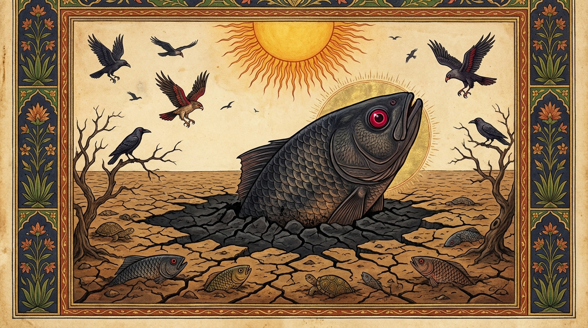

5. මච්ඡ ජාතකය (75)
“අභිත්ථනය පජ්ජුන්න” යන මේ ජාතක දේශනාව බුදුරජාණන් වහන්සේ ජේතවනාරාමයෙහි වැඩ වාසය කරන සමයෙහි, තමන් වහන්සේ විසින් (අතීතයේ) වස්සවන ලද වර්ෂාවක් අරබයා වදාළ සේක. එක් කාලයක කොසොල් රටට වැසි නොවැස්සේය. වගාවන් මැලවී ගියේය. ඒ ඒ තැන්වල ජලාශ, පොකුණු, විල් ආදිය වියළී ගියේය. ජේතවන දොරටුව අසල ජේතවන පොකුණෙහි ද දිය සිඳී ගියේය. මඩ ගොඩෙහි ගිලී සිටි මසුන් සහ ඉබ්බන්ව, කපුටු, උකුසු ආදීහු උල් ආයුධ හා සමාන හොටවලින් ඇන එළියට ගෙන දඟලද්දී ම කා දමති.
බුදුරජාණන් වහන්සේ මසුන්ගේ හා ඉබ්බන්ගේ ඒ විපත දැක මහා කරුණාවෙන් උනන්දු වූ සිත් ඇත්තාහු, “අද මා විසින් වැසි වස්සවන්නට වටී” යැයි සිතූ සේක. රාත්රිය පහන් වූ කල්හි ශරීර කෘත්යයන් කොට, පිඬු සිඟා වඩින වේලාව සලකා, මහා භික්ෂු සංඝයා පිරිවරාගෙන, බුද්ධ ලීලාවෙන් සැවැත් නුවරට පිඬු පිණිස පිවිස, බතින් පසු පිණ්ඩපාතයෙන් වැළකී, සැවැත් නුවර සිට ආපසු විහාරයට වඩින අතරතුර ජේතවන පොකුණේ පඩි පෙළේ සිට ආනන්ද තෙරුන් ඇමතූහ. “ආනන්ද, දිය සළුව (වැසි සළුව) ගෙන එව, ජේතවන පොකුණෙන් නාන්නෙමි”. “ස්වාමීනි, ජේතවන පොකුණේ ජලය සිඳී ගොස් මඩ පමණක් ඉතිරි ව ඇත්තේ නොවේ ද?” “ආනන්ද, බුද්ධ බලය නම් විශාලයි. නුඹ දිය සළුව ගෙන එව”. තෙරුන් වහන්සේ එය ගෙනවිත් දුන් සේක. බුදුරජාණන් වහන්සේ එක් කොණකින් දිය සළුව හැඳ, එක් කොණකින් සිරුර පොරවා “ජේතවන පොකුණෙන් නාන්නෙමි” යි පඩි පෙළෙහි සිටියහ. ඒ මොහොතේ ම ශක්රයාගේ පඬුපුල් ගල් අසුන උණුසුම් ආකාරයෙන් දිස් විය. හෙතෙම “මේ කුමක්දැ”යි මෙනෙහි කරන්නේ, ඒ කරුණ දැන වර්ෂා වලාහක දිව්ය පුත්රයා කැඳවා, “දරුව, බුදුරජාණන් වහන්සේ දෙව්රම පොකුණෙහි නාන්නෙමි යි පියගැට පෙළේ මුල් පඩියෙහි සිටින සේක. වහා සියලු කොසොල් රට එක ම ජල ධාරාවක් කොට වැස්ස වනු” යැයි නියෝග කළේය. හෙතෙම “යහපතැ”යි පිළිගෙන එක් වලාකුළක් හැඳගෙන, එකක් පොරවා ගෙන මේඝ ගීතිකා ගයමින් පෙරදිග ලෝක ධාතුව දෙසට පැන්නේය. පෙරදිග අහසින් කලවිටක් පමණ වූ එක් වැසි වලාවක් පැන නැඟී, සිය දහස් ගණන් වලාවන් වී ගිගුම් දෙමින්, විදුලිය විහිදුවමින්, යටිකුරු කොට තබන ලද දිය කළයක ආකාරයෙන් වසිමින් මුළු කොසොල් රට මහා සැඩ පහරක් මෙන් යට කළේය. වැස්ස නොකඩවා වසින්නේ, මොහොතකින් ම දෙව්රම් පොකුණ පිරවීය. ජලය උඩ ම පියගැටය දක්වා පැමිණ සිටියේය.
බුදුරජාණන් වහන්සේ පොකුණෙන් නා, රතු පැහැති දෙපට සිවුරක් හැඳ, පටිය බැඳ, මහා සිවුර සකස් කොට පොරවා, භික්ෂු සංඝයා පිරිවරා ගොස් ගඳකිළි පිරිවෙන්හි පනවන ලද උතුම් බුද්ධාසනයෙහි වැඩ හිඳ, භික්ෂු සංඝයා විසින් වත් පිළිවෙත් දැක්වූ කල්හි නැඟිට, මැණික් ඔබා කරන ලද පියගැට පුවරුවෙහි වැඩ සිට භික්ෂු සංඝයාට අවවාද දී පිටත් කර යවා, සුගන්ධවත් ගඳකිළියට පිවිස දකුණු ඇලයෙන් සිංහ සෙය්යාවෙන් සැතපුණු සේක. සවස් කාලයෙහි දම් සභාවෙහි රැස් වූ භික්ෂූන් අතර මෙබඳු කථාවක් ඇති විය: “ඇවැත්නි, දශ බලධාරීන් වහන්සේගේ කරුණා, මෛත්රී, අනුකම්පා සම්පත්තිය බලනු මැනවි. විවිධ බෝග වර්ග මැලවී යන කල්හි, නොයෙක් ජලාශ සිඳී යද්දී මසුන් හා ඉබ්බන් මහා දුක් විඳිද්දී, කරුණාව නිසා මහජනයා දුකින් මුදවන්නෙමියි දිය සළුව ඇඳ ජේතවනාරාමයේ පොකුණේ මුල් පඩියේ සිට මොහොතින් මුළු කොසොල් රට ම මහා ජල ගැල්මකින් යට කරන්නාක් මෙන් වර්ෂාව වස්සවා, මහජනයා කායික හා මානසික දුකින් මුදවා විහාරයට වැඩිය සේක”. මෙසේ කථාව පවත්නා කල්හි බුදුරජාණන් වහන්සේ ගඳකිළියෙන් නික්ම දම් සභාවට වැඩ, “මහණෙනි, දැන් කවර කථාවකින් යුතුව සිටියහුදැ”යි විචාරා, “මෙනම් කථාවකින් යුතුව සිටියෙමු”යි කී කල්හි, “මහණෙනි, තථාගතයන් වහන්සේ පීඩාවට පත් මහජනයා වෙනුවෙන් වර්ෂාව වස්වා දුකින් මුදවූයේ දැන් පමණක් නොව, පෙර තිරිසන් යෝනියෙහි ඉපිද මත්ස්ය රාජ කාලයෙහි ද වැසි වැස්ස වූයේ ම යැ”යි වදාරා අතීත කථාව ගෙනහැර දැක්වූ සේක.
අතීතයේ මෙම කොසොල් රටෙහි ම, මෙම සැවැත් නුවර ම, මෙම දෙව්රම් වෙහෙර පොකුණ පිහිටි තැන ම වන ලැහැබින් වට වූ දිය කඳුරක් විය. එදවස බෝසත්හු මත්ස්ය යෝනියෙහි ඉපිද මත්ස්ය රංචුවක් පිරිවරාගෙන එහි වාසය කළහ. මේ කාලයේ යම් සේ වී ද එදවස ද ඒ රටෙහි වැසි නොවැස්සේය. මිනිසුන්ගේ ගොවිතැන් මැළවී ගියේය. වැව් ආදියෙහි දිය සිඳී ගියේය. මත්ස්ය හා කැස්බෑ ආදීහු මඩෙහි සැඟවුණහ. කවුඩු ආදීහු තුඩින් කොටා ඔවුන් බැහැරට ගෙන කෑවාහුය.
බෝසත්හු නෑ සමූහයාගේ ඒ විනාශය දැක, “මොවුන් මේ දුකෙන් මිදීමට මා හැර වෙනත් සමතෙක් නැත. සත්ය ක්රියාවක් කොට වැසි වස්සවා නෑයන් මරණ දුකින් මුදවමි”යි සිතා, කළු පැහැති මඩ දෙපසට කොට එළියට පැමිණියහ. කළුවර අරටුවක වර්ණය ඇති ඒ මහා මත්ස්යයා ඔප දමන ලද පද්මරාග මාණික්යය වැනි ඇස් හැර අහස දෙස බලා වැස්ස වලාහක දෙවියන්ට කථා කොට, මේඝ ගර්ජනාවක් වැනි ශබ්දයක් පිට කරමින් මෙසේ කීය: “පින්වත් පර්ජන්යය (වැස්ස වලාහකය), මම නෑයන් නිසා දුකට පත්වූයේ වෙමි. ශීලවන්ත වූ මා මෙසේ වෙහෙසෙන කල්හි ඔබ කුමක් නිසා වර්ෂාව නොවස්සන්නෙහි ද? මා විසින් තමා හා සමාන ජාතිකයන් අනුභව කරන තැනක ඉපදී, සහල් ඇටයක් පමණ වූ ද මසෙක් ආදී කොට කිසි සතකු නොකෑ විරුවෙමි. අන් සතකු ද මා විසින් කිසි දිනක දිවි තොර නොකරන ලදී. මේ සත්යයෙන් වර්ෂාව වස්සවා මගේ ඤාති සමූහයා දුකින් මුදවනු මැනවැ”යි කියා, ළඟ හැසිරෙන සේවකයකුට අණ කරන්නාක් මෙන් වැස්ස වලාහක දිව්ය රාජයා අමතමින් මේ ගාථාව ප්රකාශ කළේය.

“මේඝය, ගර්ජනා කරව. කපුටන්ගේ (මත්ස්ය) නිදානය විනාශ කරව. කපුටු සමූහයා ශෝකයට පමුණුවව. නෑයන් හා මා ද ශෝකයෙන් මුදවව.”
එහි “අභිත්ථනය පජ්ජුන්න” යන්නෙහි “පජ්ජුන්න” යනු මේඝයට නමකි. මෙසේ වර්ෂාව වශයෙන් ලැබූ නාමයෙන් වැස්ස වලාහක දෙවියන්ව අමතයි. මෙහි අදහස නම් මෙයයි: වර්ෂාව ඝෝෂා නොකරමින්, විදුලිය නිකුත් නොකරමින් වසින්නේ නම් එය නොහොබී. එහෙයින් ඔබ ඝෝෂා කරමින්, විදුලිය නිකුත් කරමින් වස්සවන්න. “නිධිං කාකස්ස නාසය” යනු, කවුඩෝ මඩ යට සිටි මසුන් තුඩින් කොටා බැහැරට ගෙන කති. එම නිසා ඒ කවුඩන්ට මඩෙහි ගිලී සිටි මත්ස්යයන් නිදානයකැයි කියනු ලැබේ. ඒ කවුඩන්ගේ නිදානය වර්ෂාව වස්සවමින් ජලයෙන් වසා විනාශ කරන්න (සඟවන්න). “කාකං සොකාය රන්ධෙහි” යනු, කවුඩෝ මේ පොකුණ ජලයෙන් පිරුණු කල්හි මසුන් ලබා ගත නොහැකි වීමෙන් ශෝක කරන්නාහ. ඒ කාක සමූහයා මේ පොකුණ පිරවීම මගින් ශෝකයෙහි රඳවන්න; ශෝකයට පත් කරවන්න. යම් සේ ඇතුළත දවන ස්වභාව වූ ශෝකයට පැමිණෙයි ද එසේ කරව, යන අර්ථයි. “මඤ්ච සොකා පමොචය” යන්නෙහි ‘ච’ කාරය කැටි කිරීමේ අර්ථයයි (සමුච්චයාර්ථ). මෙසේ මා ද, මගේ ඤාතීන් ද යන සියල්ලන් ම මේ මරණ ශෝකයෙන් මුදවනු මැනවි.
මෙසේ බෝසත්හු ළඟ හැසිරෙන සේවකයකුට අණ කරන්නාක් මෙන් වැස්ස වලාහක දෙවියන් අමතා, මුළු කොසොල් රටෙහි ම මහා වර්ෂාවක් වස්සවා, මහජනයා මරණ දුකින් මුදවා, දිවි කෙළවර කම් වූ පරිදි මිය ගියහ.
“මහණෙනි, තථාගතයෝ දැන් පමණක් ම වර්ෂාව වස්සවන්නේ නොවෙති. පෙර මත්ස්ය යෝනියෙහි උපන්නා වූ දා ද වැසි වස්සවූවෝ ම යැ”යි වදාරා, මේ ධර්ම දේශනාව ගෙනහැර දක්වා, පූර්වාපර සන්ධි ගළපා ජාතකය නිමවූ සේක. “එදවස මත්ස්ය සමූහයා නම් දැන් මේ බුදු පිරිස ම වූහ. වැස්ස වලාහක දෙව් රජ වූයේ ආනන්ද තෙරුන් ය. මත්ස්ය රාජයා නම් මම ම වීමි.”
පස්වන මච්ඡ ජාතක වර්ණනාව යි.